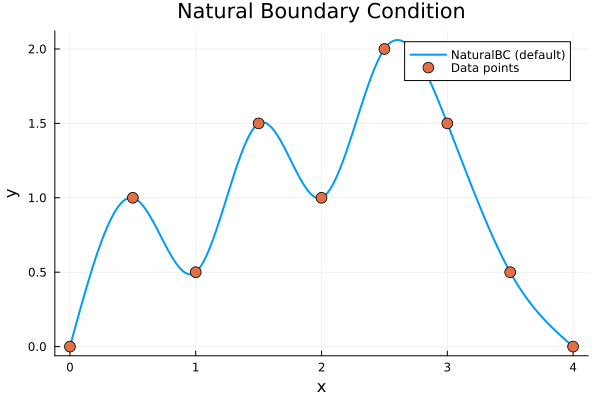
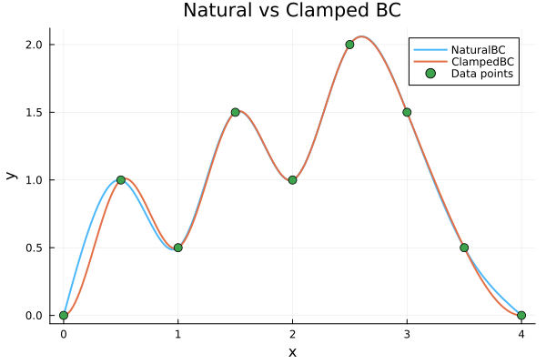
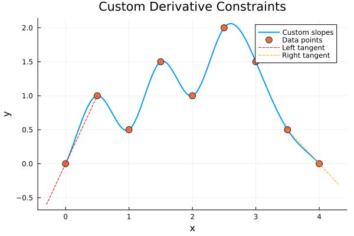
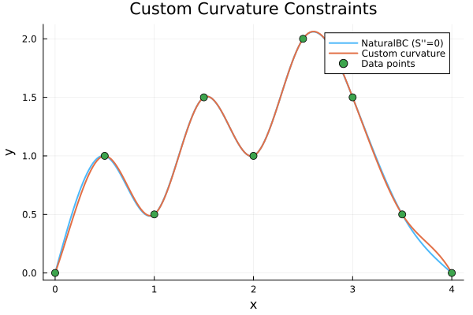
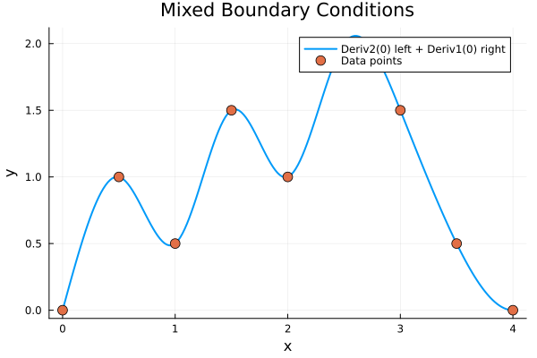
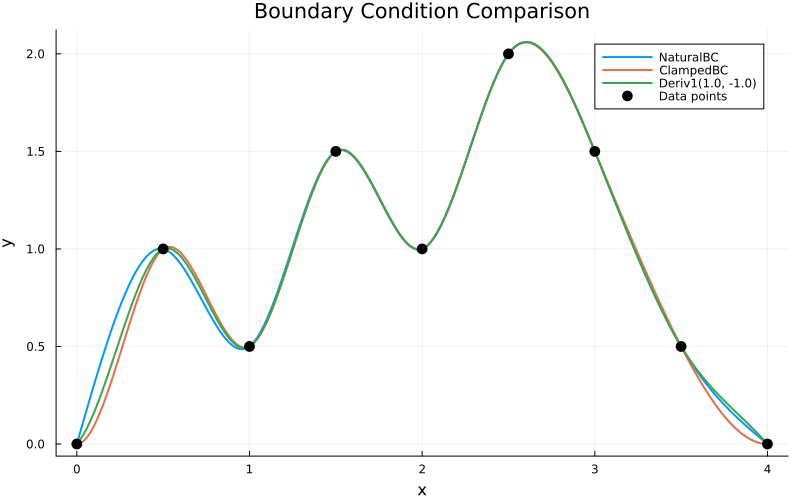
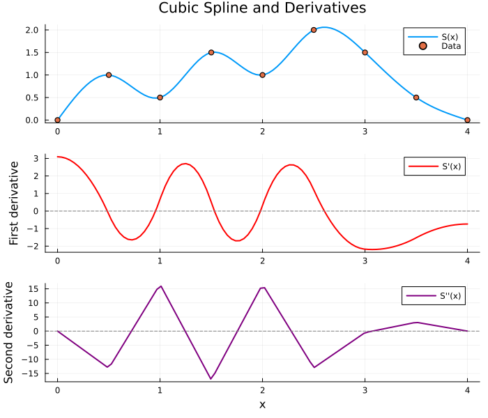

Standard Boundary Conditions
Standard boundary conditions are used for non-periodic data where the endpoints are distinct. This page covers NaturalBC, ClampedBC, and custom derivative constraints.
Available Types
| Type | Mathematical Constraint | Description |
|---|---|---|
NaturalBC() | $S''(x_0) = S''(x_n) = 0$ | Zero curvature at endpoints |
ClampedBC() | $S'(x_0) = S'(x_n) = 0$ | Zero slope at endpoints |
Deriv1(val) | $S'(x) = \text{val}$ | Specified first derivative |
Deriv2(val) | $S''(x) = \text{val}$ | Specified second derivative |
BCPair(left, right) | Mixed | Different conditions at each end |
NaturalBC (Default)
Natural boundary conditions assume zero curvature (second derivative) at the endpoints. This is the default and works well when you have no prior knowledge about endpoint behavior.
using FastInterpolations
using Plots
# Non-uniform y-values on uniform grid
x = range(0.0, 4.0, 9)
y = [0.0, 1.0, 0.5, 1.5, 1.0, 2.0, 1.5, 0.5, 0.0]
xq = range(0.0, 4.0, 200)
y_natural = cubic_interp(x, y, xq; bc=NaturalBC())
plot(xq, y_natural, label="NaturalBC (default)", linewidth=2)
scatter!(x, y, label="Data points", markersize=6)
title!("Natural Boundary Condition")
xlabel!("x")
ylabel!("y")
ClampedBC
Clamped boundary conditions force zero slope at the endpoints. Use this when you know the curve should be flat at the boundaries.
y_clamped = cubic_interp(x, y, xq; bc=ClampedBC())
plot(xq, y_natural, label="NaturalBC", linewidth=2, alpha=0.7)
plot!(xq, y_clamped, label="ClampedBC", linewidth=2)
scatter!(x, y, label="Data points", markersize=5)
title!("Natural vs Clamped BC")
xlabel!("x")
ylabel!("y")
Notice how ClampedBC creates horizontal tangents at the endpoints.
Custom Derivative Constraints
Deriv1 - Specified Slope
Use Deriv1(value) when you know the exact slope at an endpoint:
# Known slopes at boundaries
left_slope = 2.0 # Steep positive slope at left
right_slope = -1.0 # Gentle negative slope at right
y_custom = cubic_interp(x, y, xq; bc=BCPair(Deriv1(left_slope), Deriv1(right_slope)))
plot(xq, y_custom, label="Custom slopes", linewidth=2)
scatter!(x, y, label="Data points", markersize=6)
# Show tangent lines at endpoints
x_left = range(-0.3, 0.5, 10)
plot!(x_left, y[1] .+ left_slope .* x_left, linestyle=:dash, label="Left tangent", color=:red)
x_right = range(3.5, 4.3, 10)
plot!(x_right, y[end] .+ right_slope .* (x_right .- 4.0), linestyle=:dash, label="Right tangent", color=:orange)
title!("Custom Derivative Constraints")
xlabel!("x")
ylabel!("y")
Deriv2 - Specified Curvature
Use Deriv2(value) when you know the curvature at an endpoint:
# Specify curvature instead of slope
y_curv = cubic_interp(x, y, xq; bc=BCPair(Deriv2(5.0), Deriv2(-5.0)))
plot(xq, y_natural, label="NaturalBC (S''=0)", linewidth=2, alpha=0.7)
plot!(xq, y_curv, label="Custom curvature", linewidth=2)
scatter!(x, y, label="Data points", markersize=5)
title!("Custom Curvature Constraints")
xlabel!("x")
ylabel!("y")
BCPair - Asymmetric Conditions
BCPair(left, right) allows different boundary conditions at each endpoint using Deriv1 and Deriv2:
# Zero curvature at left (natural), zero slope at right (clamped)
y_mixed = cubic_interp(x, y, xq; bc=BCPair(Deriv2(0.0), Deriv1(0.0)))
plot(xq, y_mixed, label="Deriv2(0) left + Deriv1(0) right", linewidth=2)
scatter!(x, y, label="Data points", markersize=6)
title!("Mixed Boundary Conditions")
xlabel!("x")
ylabel!("y")
Comparison of All BC Types
p = plot(size=(800, 500), legend=:topright)
plot!(p, xq, cubic_interp(x, y, xq; bc=NaturalBC()),
label="NaturalBC", linewidth=2)
plot!(p, xq, cubic_interp(x, y, xq; bc=ClampedBC()),
label="ClampedBC", linewidth=2)
plot!(p, xq, cubic_interp(x, y, xq; bc=BCPair(Deriv1(1.0), Deriv1(-1.0))),
label="Deriv1(1.0, -1.0)", linewidth=2)
scatter!(p, x, y, label="Data points", markersize=6, color=:black)
title!(p, "Boundary Condition Comparison")
xlabel!(p, "x")
ylabel!(p, "y")
p
Derivative Views
Access the first and second derivatives of a cubic spline using deriv1 and deriv2:
# Create interpolant
itp = cubic_interp(x, y)
# Get derivative views
itp_d1 = deriv1(itp) # First derivative
itp_d2 = deriv2(itp) # Second derivative
# Evaluate derivatives
xq_deriv = range(0.0, 4.0, 100)
y_vals = [itp(xi) for xi in xq_deriv]
d1_vals = [itp_d1(xi) for xi in xq_deriv]
d2_vals = [itp_d2(xi) for xi in xq_deriv]
p = plot(layout=(3,1), size=(700, 600))
plot!(p[1], xq_deriv, y_vals, label="S(x)", linewidth=2)
scatter!(p[1], x, y, label="Data", markersize=4)
title!(p[1], "Cubic Spline and Derivatives")
plot!(p[2], xq_deriv, d1_vals, label="S'(x)", linewidth=2, color=:red)
hline!(p[2], [0], linestyle=:dash, color=:gray, label=nothing)
ylabel!(p[2], "First derivative")
plot!(p[3], xq_deriv, d2_vals, label="S''(x)", linewidth=2, color=:purple)
hline!(p[3], [0], linestyle=:dash, color=:gray, label=nothing)
ylabel!(p[3], "Second derivative")
xlabel!(p[3], "x")
p
Notice how the second derivative is zero at the endpoints (NaturalBC).
CubicInterpolant Usage
For repeated evaluation with fixed data, create a reusable interpolant:
# Create once with specific BC
itp = cubic_interp(x, y; bc=NaturalBC())
# Evaluate many times (zero-allocation after first call)
results = [itp(xi) for xi in 0.0:0.5:4.0]
println("Evaluations: ", round.(results, digits=3))Evaluations: [0.0, 1.0, 0.5, 1.5, 1.0, 2.0, 1.5, 0.5, 0.0]In-Place Evaluation
out = zeros(5)
itp(out, [0.5, 1.0, 1.5, 2.0, 2.5])
println("In-place results: ", round.(out, digits=4))In-place results: [1.0, 0.5, 1.5, 1.0, 2.0]When to Use Each BC
| Condition | Use When |
|---|---|
NaturalBC() | No prior knowledge about endpoints (safe default) |
ClampedBC() | Data should have flat tangents at boundaries |
Deriv1(val) | You know the exact slope at an endpoint |
Deriv2(val) | You know the exact curvature at an endpoint |
BCPair(...) | Different constraints needed at each end |
See Also
- Periodic BC: For cyclic data that wraps around
- Derivatives: Analytical first and second derivatives
- Extrapolation: Behavior outside the data domain
- Cubic API Reference: Complete function signatures